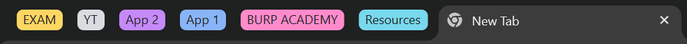
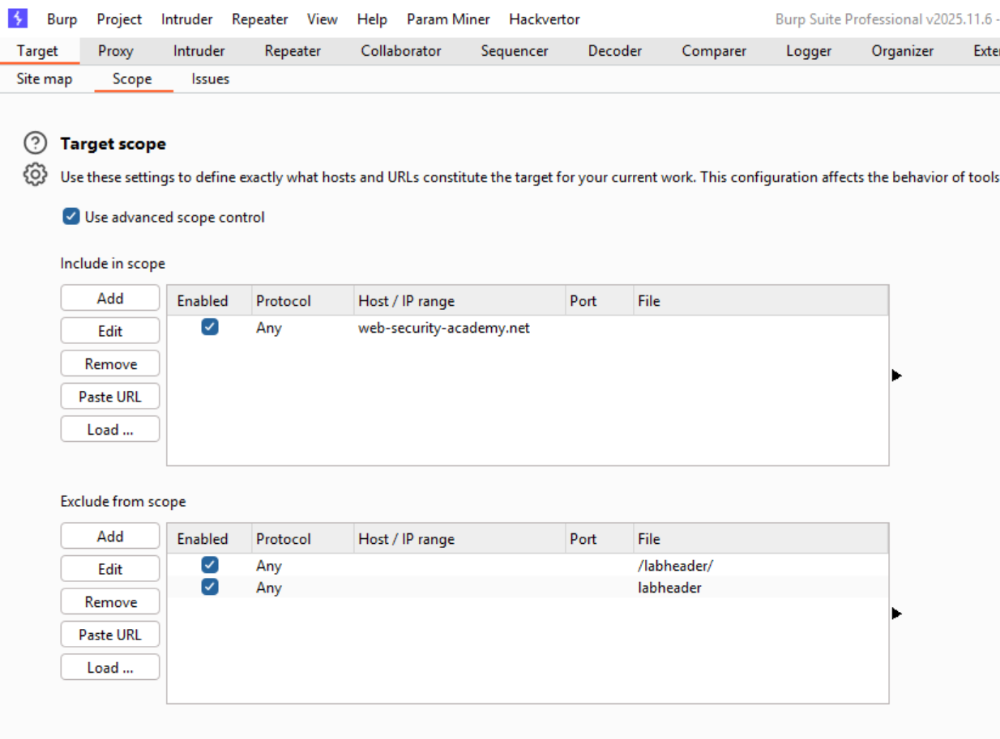
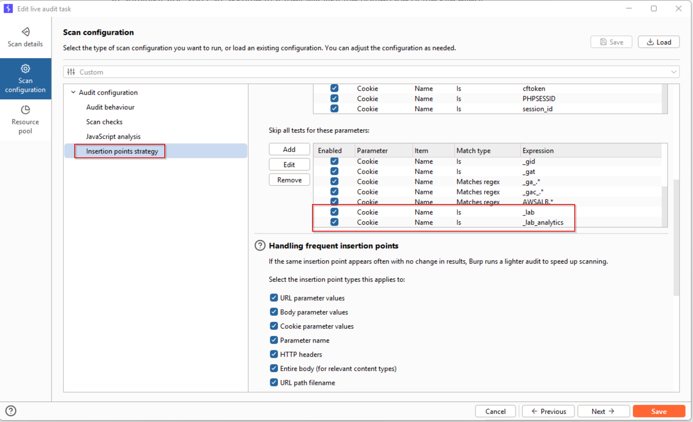
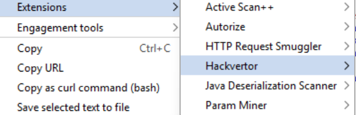

The Burp Suite Certified Practitioner exam is both challenging and fun. The exam will test your ability to own 2 seperate web applications by identifying, chaining, and exploiting a wide variety of vulnerabiliies. Although challenging, I was able to prep for and pass the BSCP exam in 22 days. You can verify my achievement here. When it came to studying, I simply did a handful of mystery labs, completed the practice exams a few times, and reviwed labs related to topics I was not overly familiar with. There are many resources out there for cheat sheets, payloads, etc. so I did not feel it was valuable to repeat that information in this blog (see "Organization" > "Resources" for more links). Instead here are my key tips and takeaways that I haven't seen discussed elsewhere.
Organization
Because the exam is limited to 4 hours, ensuring you are organized is essential. I utilized tab groups within my browser to help organize resources during the exam. Below is a list of tabs I kept open and the groups I organized them into during the exam.

- Proctoring software
- Exam "progress dashboard"
- 7 hour background music
- App 1 | application
- App 1 | exploitation server
- App 1 | exploitation server logs
- App 1 | email server
- App 2 | application
- App 2 | exploitation server
- App 2 | exploitation server logs
- App 2 | email server
- All topics
- Other "All ___ labs" for certain topics for easy referencing
- ChatGPT (didn't need)
- D4mianWayne GitHub
- DingyShark GitHub
- botesjuan GitHub
- Dynamic Attack Path Tracker
Exam
YT
App 1
App 2
Burp Academy
Resources
Use this same organization when you attempt the practice exams to create that familiarization for the actual exam.
Scanner Optimization
There is nothing worse than having "issues" generated for out-of-scope items. Here are the quick modifications I made to my Burp scope and scanner confiuration, before the exam started, to limit the noise. You can then adjust the display filters on various tools, such as "HTTP History" to show only in-scope items. Of note, once I completed App 1, I updated the scope to include the full URL for App 2 to easily hide issues generated for App 1.


Methodology
The resources listed above are fantastic for referencing payloads and different attacks for the various vulnerabilities. One thing that helped me was creating an initial game-plan, so that I knew exactly what to do once the exam started. You plan may differ, but at a high-level my approach to starting was:
- Open App 1 resources in tabs (see "Organization" > "App 1" above)
- Copy the App URL into Burp Proxy browser
- Attempt login and/or password reset functionality for 1 known ("carlos"/"administrator") and 1 unknown user ("notreallyreal")
- Analyze response differences in both of the above, then send that request to "intruder" and run a bruteforce to look for valid creds, other users, etc.
- Perform a "click-through" - click through all application functionality, submitting data where applicable, and gain familiarization with the application
- Run targeted scans on all parameters in the request body and URL
- Right-click request > Extensions > * run extension focused scans *
- Check issues raised by the scanner
- Start with any obvious vulnerabilties
- Manually review requests/responses
- At each stage, focus on the new functionality that you gain access to
The exam states that there is only 1 active user for each applicaiton. Meaning, if Stage 1 requires an active user to exploit vulnerability then Stage 2 does not (and visa versa). I recommend noting which attacks require user interaction and which ones do not to help eliminate wasting time.

Common Pitfalls to Avoid
- Aimlessly spraying payloads everywhere - creativity is great, but don't throw pasta at the wall the entire exam
- Switching between the two applications too frequently
- Spending too much time on vulnerabilities that aren't actually exploitable
- Rushing and/or panicking - you have time :)
- Giving up - don't!
- During my final attempt of the exam, I got flag 5/6 with ~17 minutes remaining and the final flag with ~6 minutes remaining.
Conclusion
The Burp Suite Certified Practitioner exam was actually quite fun. It was a great reminder that during pentests, organization and a having a solid game-plan can make a huge difference in your overall effectiveness. If you are planning to take the BSCP exam soon, I wish you the best of luck! If this blog is benificial, I would love to hear from you on LinkedIn.